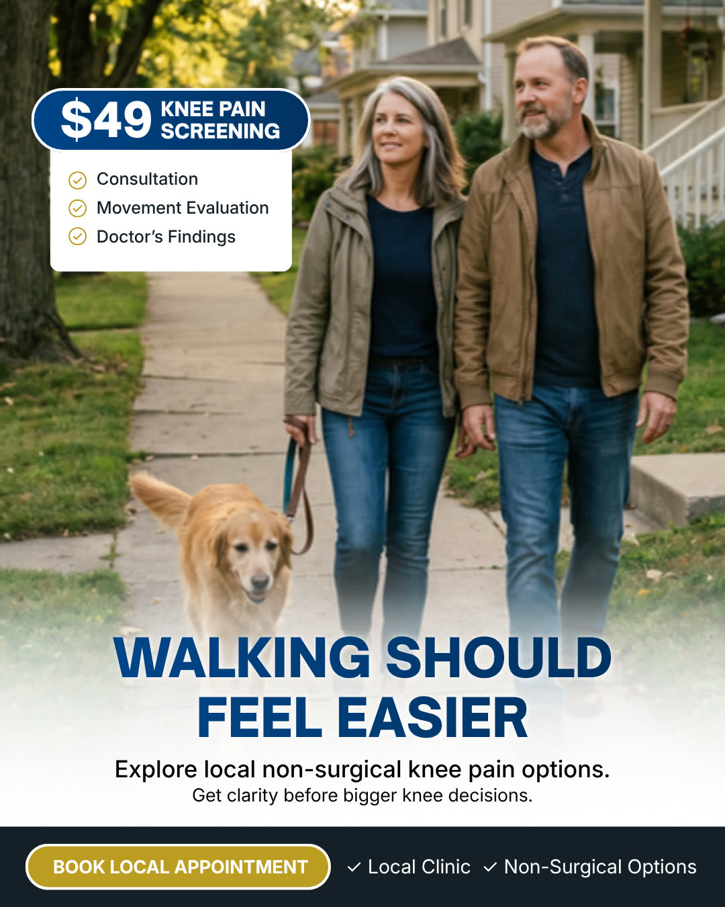
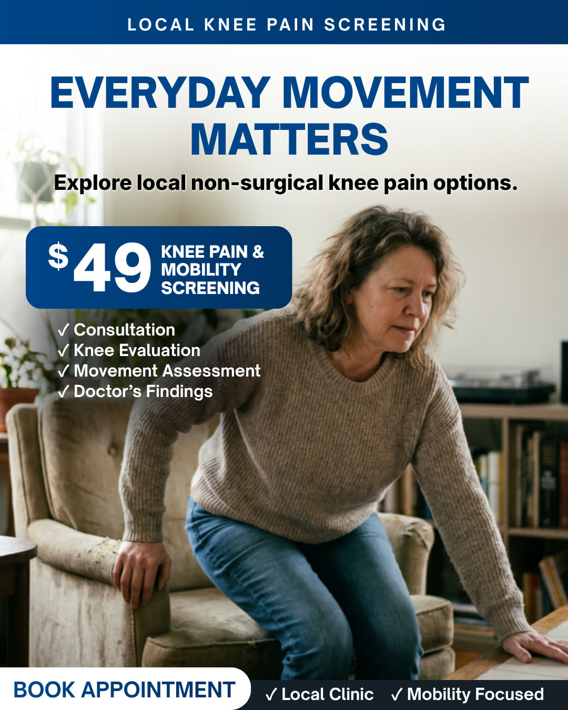
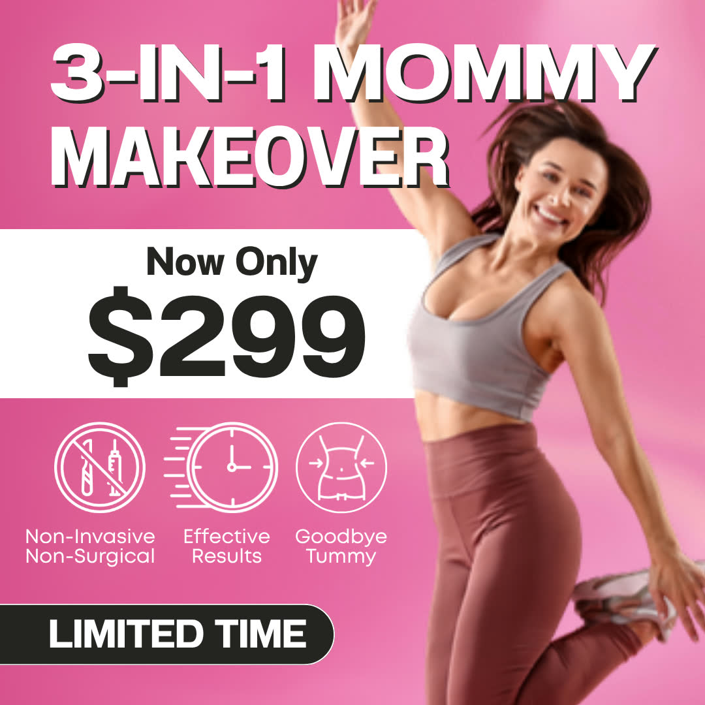
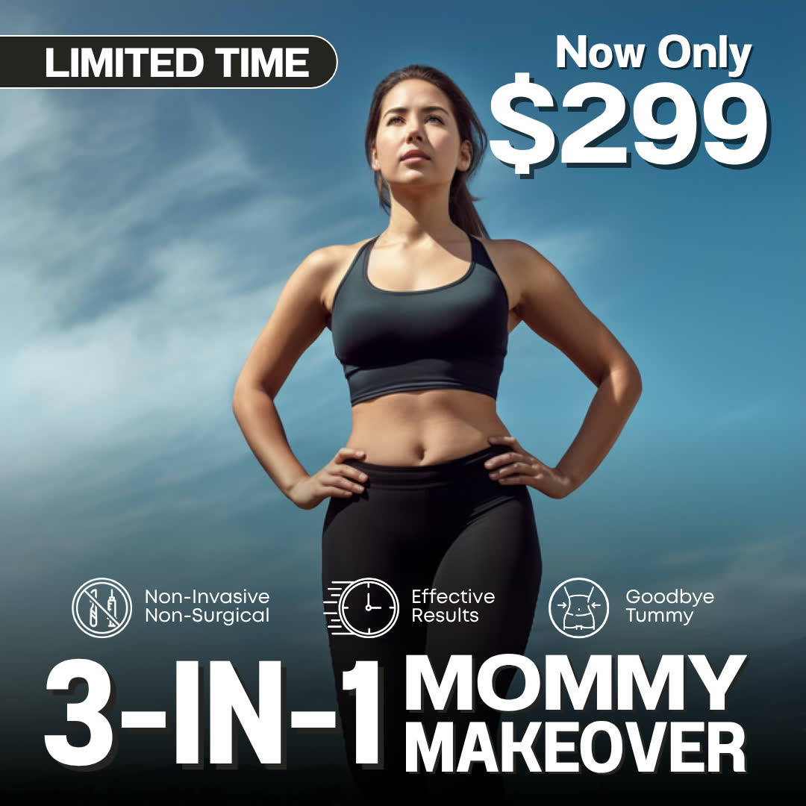
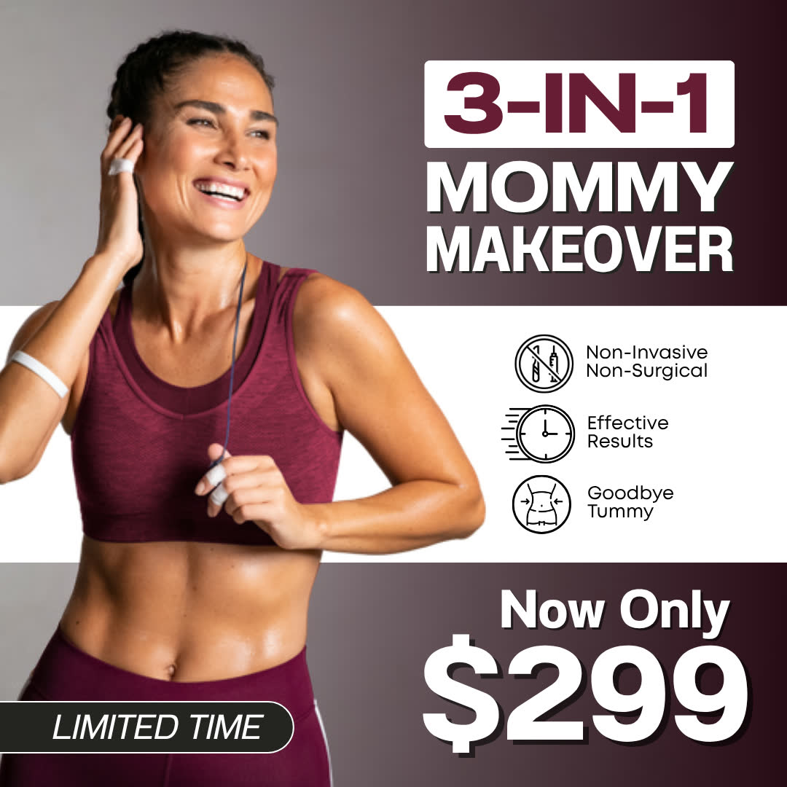
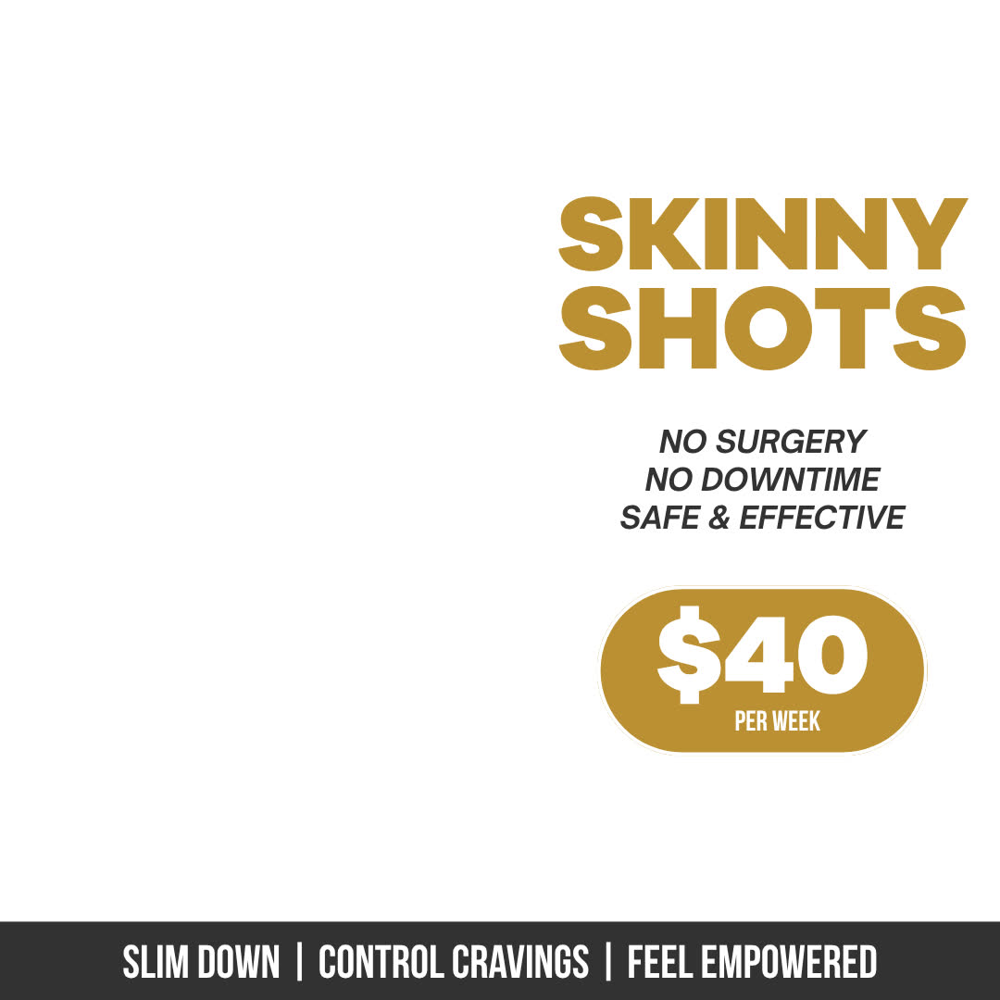

Alex Amaro I run the ads, build the agentic-AI systems that scale them, and own the full funnel.
9.5× the leads Same client, same ad account, head-to-head against the incumbent national agency: 114 leads at $12.59 against their 12 at $49.81. See the head-to-head$225K+ in Meta spend across 14+ accounts, at $4–22 CPL per campaign. Most teams hire three people for this — I'm the one who does all three.
- 7Anthropiccertifications
- 4HubSpot Academycertifications
- 3LanguagesEN/ES bilingual · FR conversational
- See every credential
Full ad production and media management.
Targeting used to be the lever; the algorithm handles that now — the creative is the lever, which makes producing it and buying against it one job rather than two. I generate the work myself, at volume, and have it in-market the same week.
A $49 screening offer for a chiropractic client: same promise, same design system, eight different ways in — so the winner is decided by the market instead of by my taste.






Across the verticals I actually buy media in 17 more creatives
Body contouring, laser, weight loss — offer-led, written and designed to be bought, not to win a design award. Client names and any identifying detail are stripped.






And a slice of the wider library — chiropractic, med spa, weight-loss and local-service brands, concept through hook through design. Clients anonymized.


UGC-style ads generated and directed rather than filmed. A hook on its own is a component; a direct-response ad is that hook plus the end card carrying the promise and the CTA. Here is the component, and here is the finished unit it builds into.
The end card is deliberately claim-free. Brand, promise, CTA — no number, because a figure printed into an ad has to trace to a sourced figure before it runs. Craft, not a performance claim: no CPL or ROAS is bolted onto any creative here, because a creative isn't a result — the numbers live in The Proof Room. And nothing identifying ships — staff faces, name badges, clinic signage and client logos are held back, because no client here signed a release.
Hear an AI agent I built take a real call.
The same AI voice receptionist I build and run paid campaigns for — it answers, qualifies the lead, and books the appointment, 24/7. Grab a slot and I'll put it on a live, unscripted call with you.
The AI Receptionist
Real-time voice that never misses a call — an "AI employee" I build for clinics, venues, and local service businesses, already answering real calls in the wild.
Most teams hire three people for this. I do all three.
Built on CRM automation (GoHighLevel builds, HubSpot-certified RevOps), AI lead response, and attribution, so the system keeps converting after the click — not just the click itself.
Media buying, systems engineering, and copywriting usually live in three different people — three sets of hand-offs, three things that break. They live in one operator here: fewer hand-offs, faster iteration, and a system that keeps converting after the click.
And that's the whole chain — ad to booked appointment.
The Ad
Meta / paid-social creative & targeting that earns the cheap, qualified click.
Qualified Lead
Direct-response copy & qualifying lead forms that filter for real buyers.
GoHighLevel Follow-Up
Speed-to-lead automation + AI lead response that work the lead 24/7.
Booked Appointment
The metric that matters — scheduled appointments + attribution back to source.
The full stack, tool by tool 26 across 4 disciplines
Paid Media & Lead Generation
Marketing Automation & RevOps
Direct-Response Copy & Growth
AI & Generative
I build on the bleeding edge of agentic AI.
The hardest thing to fake: production AI systems that actually ship. I build the "AI employees" that run the work — lead-gen agents, multi-agent operations, AI voice and message follow-up, CRM automation — engineered around Claude Code (7 Anthropic certifications). A marketer who builds the AI workforce, not a developer who picked up marketing. That operator instinct isn't new: I built and ran a multi-six-figure Amazon/eBay business through college, self-funding tuition.
GoHighLevel Automation Engine
End-to-end CRM automation built across 22 client CRM sub-accounts: speed-to-lead, missed-call text-back, SMS / email / voicemail nurture, pipeline routing, and reactivation. The same numbered workflow architecture redeploys account to account — packaged as 8 productised vertical snapshots (chiro, orthodontics, med spa, weight loss, wedding venue), not rebuilt by hand each time.
Careline Command Center
A production app I built that programmatically generates marketing videos — wiring a Next.js front end to Remotion for code-driven video rendering and Google Generative AI for content. Proof I don't just use AI tools; I engineer them into systems that ship creative at scale.
Three more systems I run Autonomous agent · multi-agent ops · voice & message AI
Autonomous Opportunity Radar
An autonomous agent I built end-to-end: it ingests live alerts, parses and scores every opportunity against a custom rubric, and surfaces the best-fit matches with full context to Slack in real time. TypeScript, 14/14 tests, GitHub Actions cron — a deployable opportunity-detection engine.
Multi-Agent Operations OS
I run my entire operation on a multi-agent system I architected and operate — built on Claude Code + MCP, the same agentic patterns enterprises are racing to adopt.
AI Receptionist — Voice & Message-Based
Voice AI and message-based AI (SMS / chat) that answer missed calls, reply to inbound texts, and book appointments 24/7 for local businesses — turning the calls and messages that usually hit voicemail into booked revenue, wired straight into the CRM.
Hard numbers from real accounts.
The head-to-head from the top of the page, and everything underneath it. Its five campaign rows reconcile to the cent and to the lead against an independently pulled account total — ~75% lower cost per lead, same account. Clients are anonymized to category labels; every figure traces to a live Meta ad account or CRM I personally operate and is labeled with how it's verified in the Proof Room. Last full reconciliation June 2026.
Same client. Same ad account. Head-to-head.
Verified vs. live Meta AdsCost per lead across five verticals, and six more receipts Refrigeration · weight-loss · med spa · chiro · tattoo removal
Cost per lead, by vertical
All verified vs. live Meta AdsDon't take my word for it — run the math on your business.
Drag the sliders and I'll show you your funnel's economics — and what dialing cost per lead to my verified benchmark does to it. Live, no email required.
Everything else, one click away.
Copy, generative-AI work, campaign decks, the sites the ads point at, and the credentials. Open what you care about.
Direct-response copywriting The ad is only half the conversion
I write the psychology-based, direct-response copy that filters for buyers and books the call — and the edge isn't the writing alone — it's AI-augmented but human-directed, built on proven direct-response frameworks, so the output lands sharp and on-voice, not generic AI slop. Hooks, qualifying lead forms, landing pages, and follow-up that turn cold traffic into booked revenue.
Generative-AI creative 5 pieces
AI-generated ad creative — 3D patient animations, UGC-style explainers and product demos. The app that renders them programmatically is above, in Systems.
3D AI Patient Animation
3D AI-generated patient animation produced for a weight-loss clinic ad — built to stop the scroll and explain the offer.
Available on request — 3D AI patient animation for a weight-loss adChiropractic / Knee-Pain Ad
AI animation created for a chiropractic and knee-pain campaign — visualizing the problem and the relief in seconds.
Available on request — AI animation for a chiropractic knee-pain ad"Weight Loss Is Not Just Willpower"
AI-animated direct-response ad reframing the weight-loss conversation — a concept-led creative built to convert.
Available on request — AI-animated weight-loss direct-response adUGC-Style Explainer Video
UGC-style explainer video for weight-loss clinics — authentic, native-feeling creative engineered for paid social.
Available on request — UGC-style explainer video for weight-loss clinicsCareLineAI — Product-Demo Creatives
AI product-demo creatives for CareLineAI — showing the product in action with generative visuals and motion.
Available on request — CareLineAI product-demo creativesCampaign decks & playbooks 5 walkthroughs
Deeper walkthroughs of the paid-media, automation, and case-study work behind the numbers above.
Local Business Growth Portfolio
A walkthrough of local-business growth work — campaigns, offers, and the systems that turned spend into booked appointments.
Available on request — Local Business Growth portfolio deckMeta Ads & Paid Social Portfolio
Meta Ads and paid-social campaigns across clinics, medspas, and local services — creative, targeting, and CPL outcomes.
Available on request — Meta Ads and paid-social portfolio deckGoHighLevel & Backend Marketing Ops
The backend that makes ads pay off — GoHighLevel CRM automation, speed-to-lead, nurture sequences, and pipeline ops.
Available on request — GoHighLevel and backend marketing-ops deckMedspa Case Studies
Medspa and aesthetics case studies — campaign breakdowns, cost-per-lead turnarounds, and booked-appointment results.
Available on request — Medspa case studies deckClinic Profit Playbook
An eBook packaging the playbook — how clinics turn paid traffic into booked, profitable appointments end to end.
Available on request — Clinic Profit Playbook eBookWebsites & funnels Including one live site I built end to end
Brand, copy, and conversion-built websites and lead funnels — wired into the CRM so a click becomes a captured, followed-up lead. Built for local & service businesses and optimized for conversion and for how AI answer-engines (AEO / GEO) and Google now surface them.
Clarity Clean — brand, site & lead funnel
Designed and built end-to-end for a Wisconsin commercial-cleaning company: brand and positioning (locally & family-owned, eco-friendly, licensed & insured), a conversion-focused site, and a free-quote lead funnel wired into GoHighLevel with speed-to-lead follow-up, plus a phone-based AI receptionist that answers inbound calls — the same stack I run for paid-media clients, proven on a business I help operate.
Conversion sites & lead funnels
Landing pages and full sites built to convert and wired into the CRM — GoHighLevel builds, lead-capture forms, speed-to-lead automation, and AEO / GEO / SEO so the page gets found and books the lead. The fastest lane from "I need leads" to a system that actually captures them.
Certifications & languages 7 Anthropic · 4 HubSpot · EN/ES/FR
Certifications
Languages
Ad copy, qualifying forms and follow-up sequences written natively in each language — including for the under-served U.S. Hispanic market, where a translated ad reads like one.